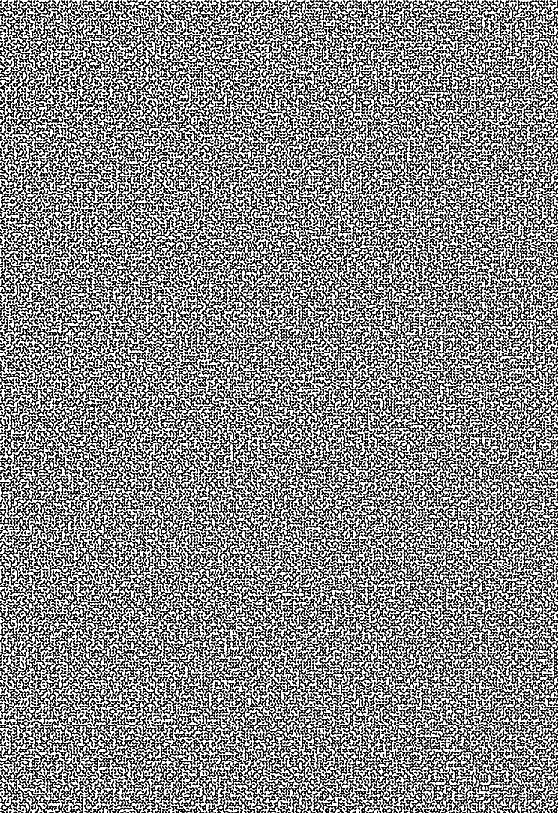
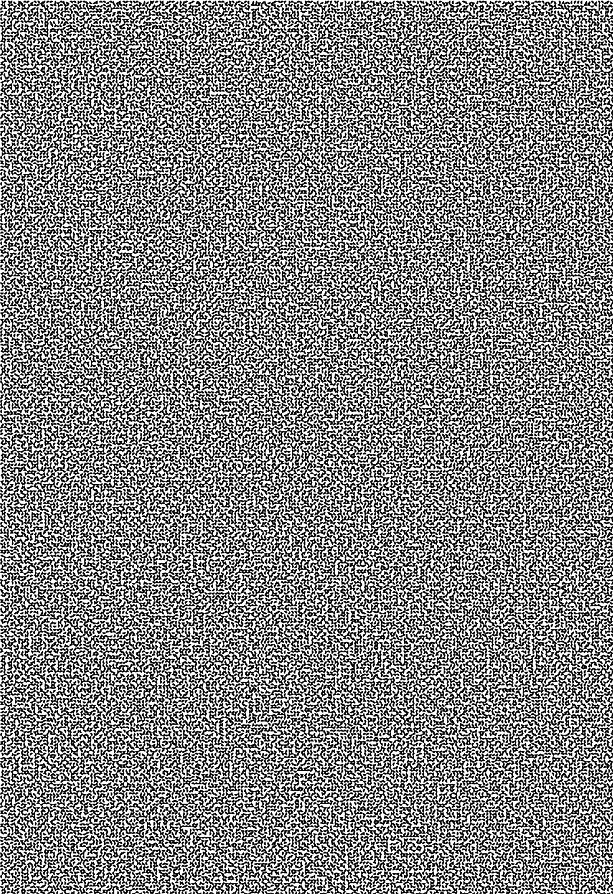

Visual cryptography (invented by Naor & Shamir in 1994; read their seminal paper or a locally cached copy) is a method for securely encrypting messages in such a way that the recipient won't need a computer to decrypt them. The underlying cipher is essentially the one time pad; so the system is unbreakable in the information theoretical sense.
The freely downloadable Visual Cryptography Kit (released under the GNU General Public Licence) allows easy practical experimentation with this fascinating invention. It requires Python and PIL, both free too; on Wintel, an easy way to get both in one go is to download Fredrik Lundh's precompiled installation for Win32 from his goodies page.
The way this stuff works is basically as follows. You have a "key", which is an acetate foil with random dots on it (nobody could extract any useful information from it). You receive a "cryptograph", which is another acetate with more random dots on it (it too, taken alone, will yield no information whatsoever to even the most determined of attackers). But you overlay the key on top of the cryptograph and hey! you see a secret message. Read my poster for a more detailed and visual introduction, then get the software and make some secret messages of your own! Or if you want a quick start, just photocopy the pictures below on a transparency, put them on top of each other and see what you get...


I originally implemented some visual cryptography utilities in C++ using the PBM file formats and conversion tools. But the integration of the various bits was less than satisfactory. So I rewrote it all as a Python module (view the source code online), based on PIL and Tkinter. This work was presented as the 7th international Python conference. The colour poster was designed for A1 paper, but the A4 version available here, despite being 8 times smaller, will still print reasonably well on a 600 dpi black and white laser. You can also view the abstract (or PDF) that appeared in the proceedings of the conference.
For extra fun, VCK also implements the greyscale variant described in the original paper: give it a picture of your face and it will split it into two postscript files that, when combined, will look similar to this (squint and you might even recognise who this famous personality is...)
Back to Frank Stajano's home page

 validated (recheck)
validated (recheck)